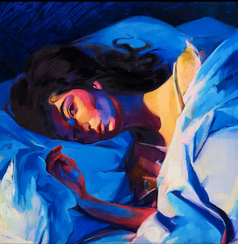

“Fluorescent”—has there ever been a better descriptor for first love? When Lorde sings it to the empty space beside her on “Supercut,” toward the end of her shining record Melodrama, we share a bit of her noted synesthesia: We see that bright, electrode glow of possibility, feel its siren shine on our faces. That neon is too beautiful to last, though; its buzz requires an effortful chemistry.
-- Pitchfolk

Cover art for Lorde's "Melodrama"
Moody. Dramatic. Over the top. Melodrama is an album for an angsty 20 something-year-old who just had their heartbroken and wants to dance. On this album, Lorde is coming of age during her most difficult period and creating incredible art in the process. It is difficult to not blast this album at full volume. This album takes the number two spot since it has near perfect production (thanks to an incredible production team) and perfect lyrics to describe the most difficult time someone can go through.
About Melodrama from Wikipedia
Melodrama is the second studio album by New Zealand singer-songwriter Lorde. It was released on 16 June 2017 by Lava and Republic Records and distributed through Universal. Following the breakthrough success of her debut album Pure Heroine (2013), Lorde retreated from the spotlight, and travelled between New Zealand and the United States. Initially inspired by her disillusionment with fame, she wrote Melodrama to capture heartbreak and solitude after her first breakup.
Read more from Wikpedia.
Top Tracks
Convinced to give Melodrama a try? Check out some of the top tracks below.
Did you know that the main producer behind Lorde’s Melodrama is Bleacher’s frontman Jack Antonoff? Jack Antonoff is a successful New Jersey based music producer and produced music for artists such as Taylor Swift, Lana Del Rey, and P!NK. Antonoff's accomplishments include two Album of the Year wins (1989 and Folklore with Taylor Swift) and many more awards. Antonoff is famous for his unique blend of 80s synth and folk inspirations; a truly perfect musical marriage.